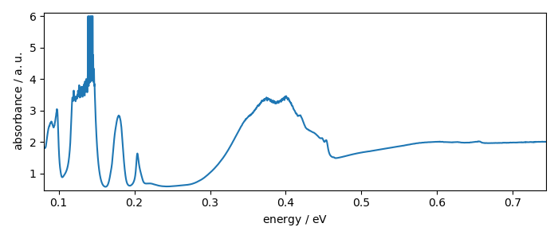
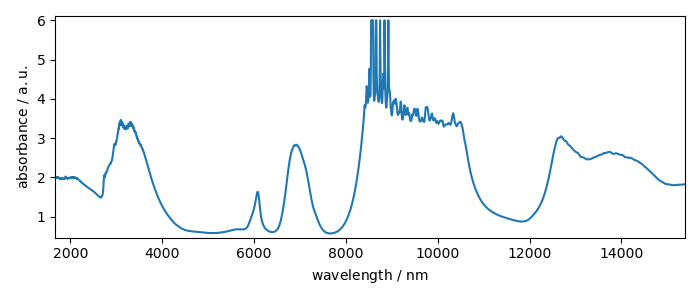
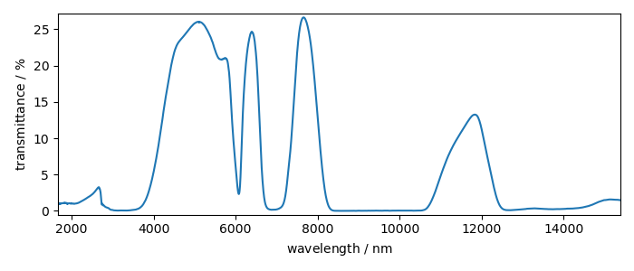
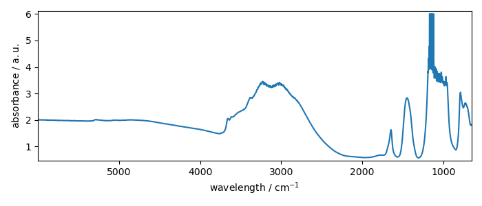

Note
Click here to download the full example code
Units manipulation examples¶
In this example, we show how units can be used in SpectroChemPy
import spectrochempy as scp
Spectrochempy can do calculations with units - it uses [pint](https://pint.readthedocs.io) to define and perform operation on data with units.
## Create quantities To create quantity, use for instance, one of the following expression:
scp.Quantity("10.0 cm^-1")
""
scp.Quantity(1.0, "cm^-1/hour")
or may be simpler using ur:
ur = scp.ur
10.0 * ur.meter / ur.gram / ur.volt
ur stands for unit registry, which handle many type of units (and conversion between them)
## Units for dataset
When loading experimental dataset using the read method, units are generally affected to coordinates and data
ds = scp.read("wodger.spg")[0]
prefs = ds.preferences
prefs.figure.figsize = (7, 3)
_ = ds.plot()
wavenumbers(x) coordinates are here expressed in $cm^{-1}$and
dataare in absorbance ($a.u.$) units.
## Convert between units
Here are some examples
x = 36 * ur("km/hr")
x.to("cm/s")
We can make the conversion inplace using ito instead of to
x.ito("m/s")
x
Obviously you cannot convert between incompatible units
try:
x.to("hour")
except scp.DimensionalityError as e:
scp.error_(e)
This, of course, also applies to NDDataset.
Lets try for the x coordinate. It is wavenumber in $cm^{-1}$ that can be transformed in $Hz$ for instance:
We can also change the wavenumbers (or frequency units), to energy units or wavelength as Spectrochempy (thanks to [pint](https://pint.readthedocs.io)) knows how to make the transformation.
- 
- 
Out:
Coord: [float64] nm (size: 5549)
absorbance units (the units of the data) can also be transformed into transmittance
- 
- 
Out:
''
Total running time of the script: ( 0 minutes 0.784 seconds)